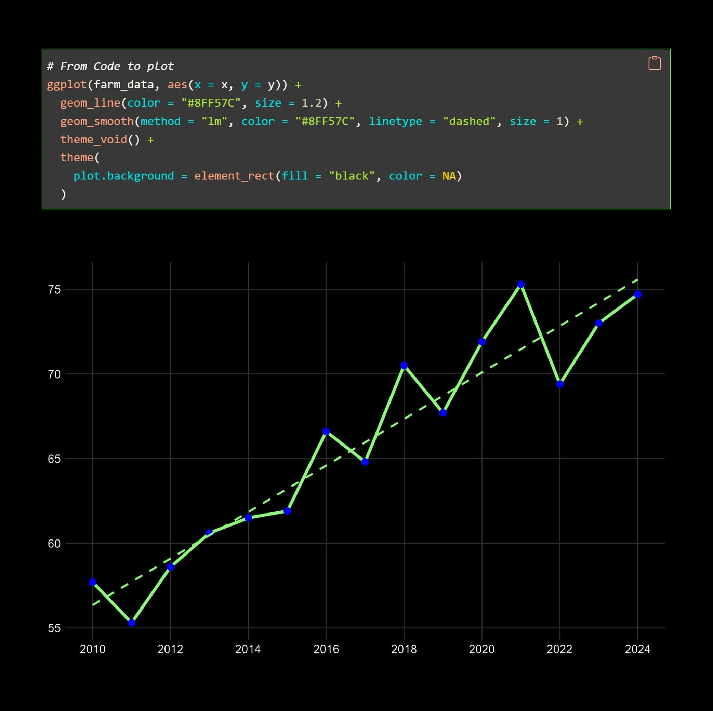

Landwirtschaftliche Datenlösungen 4.0
# Boden
# Pflanzenbau
Intelligente Analyse, nachhaltige Landwirtschaft und datenbasierte Entscheidungen für eine bessere Zukunft.

Intelligente Analyse, nachhaltige Landwirtschaft und datenbasierte Entscheidungen für eine bessere Zukunft.

Modernste Tools und Frameworks für datengetriebene Landwirtschaft und nachhaltige Innovation.
Von den Rohdaten zu wertvolle Erkenntnissen für Ertrag, Boden und Pflanzengesundheit.
Individuelle Dashboards und PDF-Auswertungen auf Knopfdruck – jederzeit verfügbar.
Datengetriebene Empfehlungen für ressourcenschonende Bewirtschaftung und langfristigen Erfolg.
Ob Idee, Frage oder einfach Interesse – ich freue mich, von Ihnen zu hören.
Schreib mir einfach